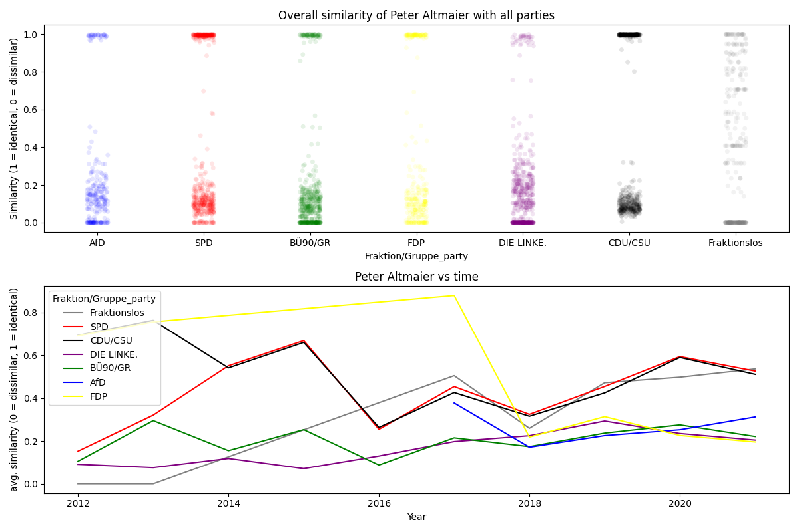
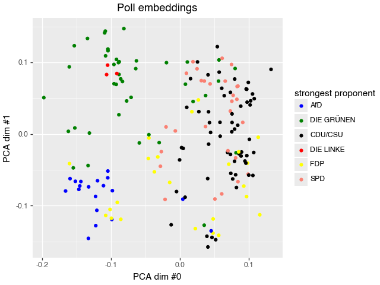

Analysing "Namentliche Abstimmungen" in the Bundestag
How close, in terms of roll call votes, are members of the parliament to the present parties? How predictable are individual votes for given polls? Answers to these questions can be found here.
Data sources
Bundestag page https://www.bundestag.de/parlament/plenum/abstimmung/liste. Contains roll call votes with information on presence / absence and vote (yes/no/abstain) for each member of the Bundestag over a longer time period.
abgeordnetenwatch.de API https://www.abgeordnetenwatch.de/api (they also have a GUI here). Contains information on politicians, parliaments, legislative periods and mandates including and beyond the Bundestag.
%load_ext autoreload
%autoreload 2
import os
from pathlib import Path
import matplotlib.pyplot as plt
import polars as pl
from fastai.tabular.all import (
Categorify,
CategoryBlock,
RandomSplitter,
TabularPandas,
tabular_learner,
)
from functools import partial
from rich import print as pprint
from bundestag.fine_logging import setup_logging
from bundestag.paths import get_paths
from bundestag.ml.similarity import (
get_votes_by_party,
pivot_party_votes_df,
prepare_votes_of_mdb,
align_mdb_with_parties,
compute_similarity,
plot,
align_party_with_all_parties,
)
from bundestag.ml.poll_clustering import SpacyTransformer, clean_text
from bundestag.ml.vote_prediction import (
plot_predictions,
get_embeddings,
plot_politician_embeddings,
plot_poll_embeddings,
)
from bundestag.gui import MdBGUI, PartyGUI
import logging
from plotnine import (
scale_color_manual,
)
logger = logging.getLogger(__name__)
setup_logging()
# if this notebook is run via `make docs` then the environment variable is set
makedocs = os.getenv("MAKEDOCS") is not None
logger.info(f"Running nb with {makedocs=}")
Comment-in the below cell to download prepared data
# import bundestag.data.download.huggingface as download_hf
# download_hf.run(Path("../data"))
Part 1 - Who is similar to whom?
Which party does a politicians voting behavior align the most with? Which parties are closest in terms of cast votes?
Loading the data
If you have cloned the repo you should already have a bundestag.de_votes.parquet file in the root directory of the repo. If not feel free to download that file directly.
If you want to have a closer look at the preprocessing please check out nbs/00_html_parsing.ipynb.
_paths = get_paths(Path("../data"))
_fig_path = Path("./images")
file = _paths.preprocessed_bundestag / "bundestag.de_votes.parquet"
df = pl.read_parquet(file)
df.head(3)
Votes by party
party_votes = get_votes_by_party(df)
party_votes.head()
Re-arranging party_votes
party_votes_pivoted = pivot_party_votes_df(party_votes)
party_votes_pivoted.head()
Which party does a politicians voting behavior align the most with?
Collecting the politicians votes
mdb = "Peter Altmaier"
mdb_votes = prepare_votes_of_mdb(df, mdb)
mdb_votes.head()
Comparing the politician against the parties
mdb_and_parties = align_mdb_with_parties(mdb_votes, party_votes_pivoted)
mdb_and_parties.head()
mdb_vs_parties = compute_similarity(mdb_and_parties, "_party")
mdb_vs_parties.head(3)
mdb_vs_parties["Fraktion/Gruppe_party"].value_counts()
Plotting
plot(
mdb_vs_parties,
title_overall=f"Overall similarity of {mdb} with all parties",
title_over_time=f"{mdb} vs time",
)
plt.tight_layout()
if makedocs:
plt.savefig(_fig_path / "mdb_similarity_vs_time.png")
plt.show()

Which parties are closest in terms of cast votes?
Collecting party votes
party_votes_pivoted.head()
party = "SPD"
partyA_vs_rest = align_party_with_all_parties(party_votes_pivoted, party)
partyA_vs_rest.head(3)
partyA_vs_rest = compute_similarity(partyA_vs_rest, suffix="_b")
partyA_vs_rest.head(3)
Plotting
plot(
partyA_vs_rest,
title_overall=f"Overall similarity of {party} with all parties",
title_over_time=f"{party} vs time",
party_col="Fraktion/Gruppe_b",
)
plt.tight_layout()
if makedocs:
plt.savefig(_fig_path / "party_similarity_vs_time.png")
plt.show()

GUI to inspect similarities
To make the above exploration more interactive, the class MdBGUI and PartyGUI was implemented to quickly go through the different parties and politicians
mdb = MdBGUI(df)
if not makedocs:
display(mdb.render())
party = PartyGUI(df)
if not makedocs:
display(party.render())
Part 2 - How will a politician cast his or her vote?
The data used below was processed using nbs/03_abgeordnetenwatch.ipynb.
path = _paths.preprocessed_abgeordnetenwatch
legislature_id = 111
file = path / f"polls_{legislature_id}.parquet"
df_polls = pl.read_parquet(file)
Clustering polls using Latent Dirichlet Allocation (LDA)
source_col = "poll_title"
nlp_col = f"{source_col}_nlp_processed"
num_topics = 5 # number of topics / clusters to identify
st = SpacyTransformer()
df_polls.head()[source_col].map_elements(
partial(clean_text, nlp=st.nlp), return_dtype=pl.List(pl.String)
)
# load data and prepare text for modelling
df_polls_lda = df_polls.with_columns(
**{
nlp_col: pl.col(source_col).map_elements(
partial(clean_text, nlp=st.nlp), return_dtype=pl.List(pl.String)
)
}
)
df_polls_lda.head()
# modelling clusters
st.fit_lda(df_polls_lda[nlp_col].to_list(), num_topics=num_topics)
# creating text features using fitted model
df_polls_lda, nlp_feature_cols = st.transform(
df_polls_lda, col=nlp_col, return_new_cols=True
)
# inspecting clusters
display(df_polls_lda.head(3))
st.lda_topics
Predicting votes
Loading data
df_all_votes = pl.read_parquet(path / f"votes_{legislature_id}.parquet")
df_mandates = pl.read_parquet(path / f"mandates_{legislature_id}.parquet")
Splitting data set into training and validation set. Splitting randomly here because it leads to an interesting result, albeit not very realistic for production.
splits = RandomSplitter(valid_pct=0.2)(df_all_votes)
splits
y_col = "vote"
Training a neural net to predict vote based on embeddings for poll_id and politician name
df_all_votes.head()
to = TabularPandas(
df_all_votes.to_pandas(),
cat_names=[
"politician name",
"poll_id",
], # columns in `df_all_votes` to treat as categorical
y_names=[y_col], # column to use as a target for the model in `learn`
procs=[Categorify], # processing of features
y_block=CategoryBlock, # how to treat `y_names`, here as categories
splits=splits,
) # how to split the data
dls = to.dataloaders(bs=512)
learn = tabular_learner(dls) # fastai function to set up a neural net for tabular data
lrs = learn.lr_find() # searches the learning rate
pprint(lrs)
learn.fit_one_cycle(
5, lrs.valley
) # performs training using one-cycle hyperparameter schedule
Predictions over unseen data
Inspecting the predictions of the neural net over the validation set.
df_mandates.head()
df_all_votes.head()
plot_predictions(
learn, df_all_votes, df_mandates, df_polls, splits, n_worst_politicians=5
)
Splitting our dataset randomly leads to a surprisingly good accuracy of ~88% over the validation set. The most reasonable explanation is that the model encountered polls and how most politicians voted for them already during training.
This can be interpreted as, if it is known how most politicians will vote during a poll, then the vote of the remaining politicians is highly predictable. Splitting the data set by poll_id, as can be done using vp.poll_splitter leads to random chance predictions. Anything else would be surprising as well since the only available information provided to the model is who is voting.
Visualising learned embeddings
Besides the actual prediction it also is interesting to inspect what the model actually learned. This can sometimes lead to surprises.
So let's look at the learned embeddings
learn.model.cpu()
embeddings = get_embeddings(learn)
To make sense of the embeddings for poll_id as well as politician name we apply Principal Component Analysis (so one still kind of understands what distances mean) and project down to 2d.
Using the information which party was most strongly (% of their votes being "yes"), so its strongest proponent, we color code the individual polls.
embeddings_pl = {
"politician name": pl.DataFrame(
{
"politician name__emb_component_0": embeddings["politician name"][
"politician name__emb_component_0"
],
"politician name__emb_component_1": embeddings["politician name"][
"politician name__emb_component_1"
],
"politician name": embeddings["politician name"]["politician name"],
}
),
"poll_id": pl.DataFrame(
{
"poll_id__emb_component_0": embeddings["poll_id"][
"poll_id__emb_component_0"
].values[1:],
"poll_id__emb_component_1": embeddings["poll_id"][
"poll_id__emb_component_1"
].values[1:],
"poll_id": [int(v) for v in embeddings["poll_id"]["poll_id"].values[1:]],
}
),
}
df_mandates["party"].value_counts()
party_colors = scale_color_manual(
breaks=[
"AfD",
"BSW",
"DIE GRÜNEN",
"CDU/CSU",
"DIE LINKE",
"FDP",
"fraktionslos",
"SPD",
],
values=["blue", "purple", "green", "black", "red", "yellow", "grey", "salmon"],
)
fig = plot_poll_embeddings(
df_all_votes, df_polls, embeddings_pl, df_mandates=df_mandates, colors=party_colors
)
fig.show()
if makedocs:
fig.save(_fig_path / "poll_embeddings.png")

The politician embeddings are color coded using the politician's party membership
fig = plot_politician_embeddings(df_all_votes, df_mandates, embeddings_pl, party_colors)
fig.show()
if makedocs:
fig.save(_fig_path / "mandate_embeddings.png")

The politician embeddings may be the most surprising finding in its clarity. It seems we find for polls and politicians 2-3 clusters, but for politicians with a significant grouping of mandates associated with the government coalition. It seems we find one cluster for the government parties and one for the government opposition.